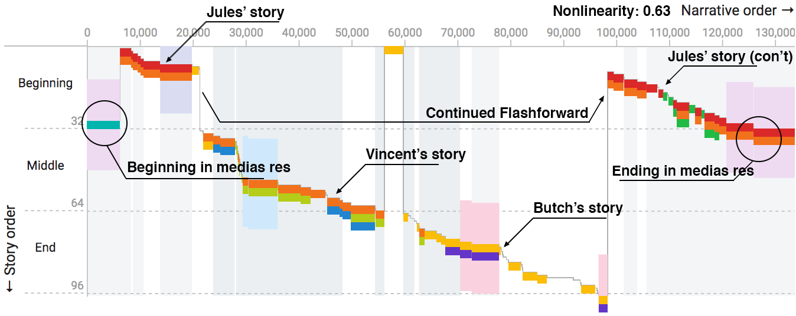
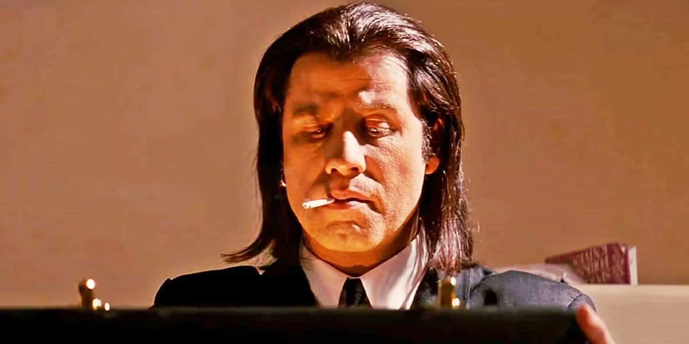
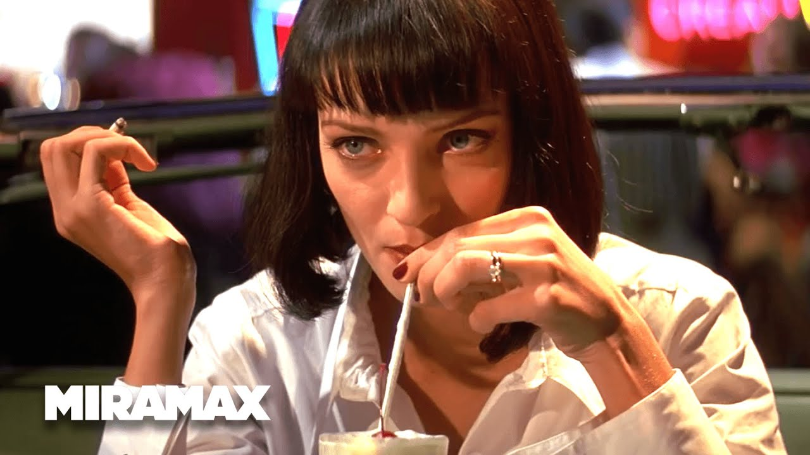
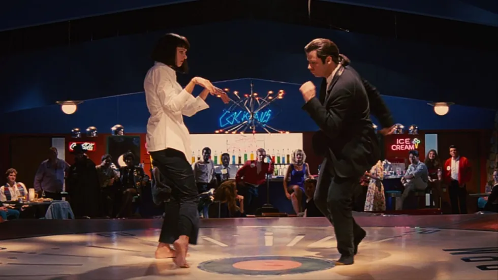
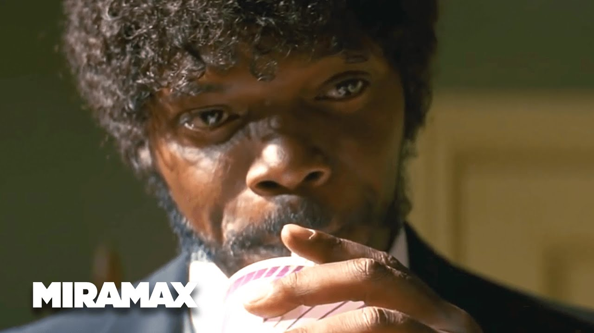

Postmodern Deconstruction of Pulp Fiction
1. Subversion of Narrative Structure

“The path of the righteous man... is beset on all sides by the inequities of the selfish.” — Jules
Postmodern Lens: Tarantino fractures the timeline into seven vignettes, rearranged like a shuffled deck of cards. This rejects:
- Traditional three-act structure
- Causality (Vincent dies mid-film, yet appears later)
- Heroic character arcs (Butch’s “redemption” occurs after betraying Marcellus)
Impact: Forces audiences to question how meaning is constructed. The diner robbery frames the film, suggesting life itself is a series of chaotic vignettes.
2. The Briefcase as Hyperreal Symbol

Baudrillard’s Theory: The glowing briefcase’s contents are never revealed, transforming it into:
- A simulacrum (representation without reality)
- A mirror of audience desire (we project meaning onto it)
- A critique of materialism (characters risk death for an empty symbol)
Key Scene: When opened, the golden light bathes characters’ faces, parodying Hollywood’s obsession with visual spectacle over substance.
3. Fast Food & Cultural Nihilism

“That’s a pretty fucking good milkshake.” — Vincent
Marxist Lens: The $5 milkshake scene dissects:
- Commodification of nostalgia (1950s diner aesthetics repackaged as luxury)
- Class stratification (contrast Vincent’s excess with Honey Bunny’s desperation)
- Performative consumption (Mia’s drug use as “entertainment”)
Modern Parallel: Foreshadows influencer culture’s obsession with curated experiences over authentic connection.
4. Blurring High/Low Culture

Cultural Collage:
- High Art: Dance scene homages Godard’s Bande à Part (1964)
- Low Art: Dialogue references McDonald’s (“Royale with Cheese”)
- Meta-Humor: Bruce Willis’ casting mocks his Die Hard hero persona
Postmodern Effect: Destroys cultural hierarchies, arguing all art is recycled and remixed.
5. Death of Moral Absolutes

“I’m tryin’ real hard to be the shepherd.” — Jules
Key Moments:
- Jules’ fake Bible quote (Ezekiel 25:17) becomes a self-help mantra
- The Wolf resolves crises through bureaucracy, not morality
- Butch saves Marcellus not out of ethics, but mutual disgust
Philosophical Tie: Reflects Lyotard’s “incredulity toward metanarratives” — no grand truth, only situational ethics.